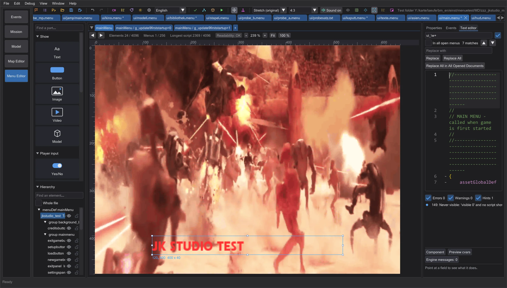
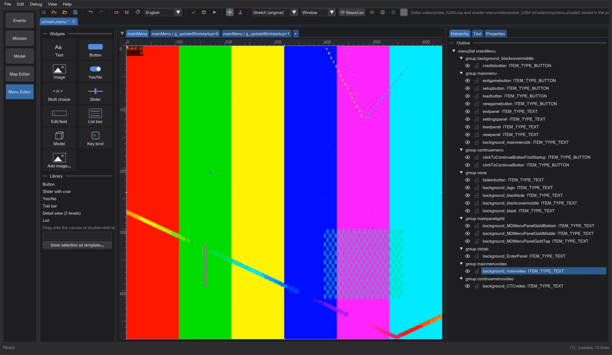
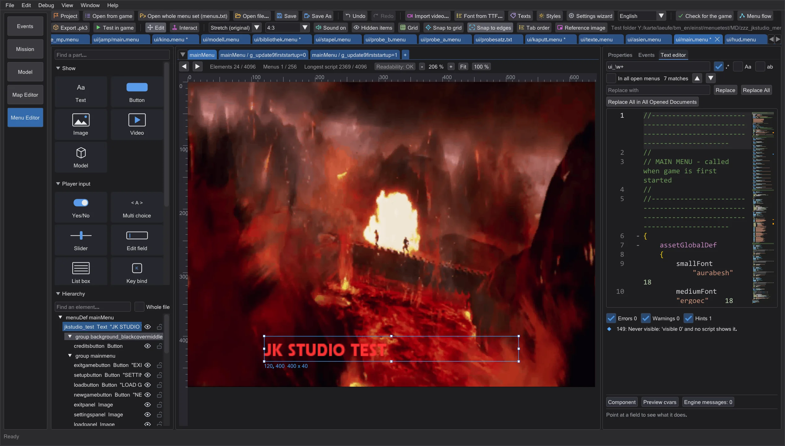

Menu editor: videos, sound and readability
Import videos the way the game can play them - size, aspect ratio, frame rate, sound, the shader with videoMap - get clear messages for missing codecs, switch the preview sounds off and read the toolbars with labels.
Importing a video#

Import video reads MP4, WebM, AVI, WMV, MOV and MKV through Windows, animated GIFs, and RoQ files - a RoQ is taken over unchanged. Choose Size (pixels): the game plays only sides that are powers of two, with at most 512 x 512 pixels in total (full-screen videos stop otherwise, larger videos overflow the game's video buffer); 512 x 512 is the default, like every Jedi Academy and Movie Duels video. Aspect ratio: Stretch (the game stretches the video onto the element anyway), Black bars or Crop. Pictures are reduced by averaging all covered pixels, so fine patterns do not flicker. Below the options you see the length, the number of frames and the size the file will have.

A menu shows a video through a shader with videoMap. The import writes it for you: menu/video/<name> in shaders/<package>.shader, next to video/<name>.roq. Use in the menu decides what happens in the menu: Background of the selected element, New full-screen video element (640 x 480, behind all others) or cinematic keyword (multiplayer only) - only multiplayer menus draw that keyword, single-player menus show nothing (the check says so). Shader, video and menu go together into the exported .pk3 and into Test in game.
Sound#
Menus always play their videos silently - the game starts them without sound. Take over sound is therefore off; switch it on for full-screen videos that the game plays with sound (for example cinematic <name> from the console or a script). The sound is stored like in the game's videos: 22050 Hz, mono or stereo, between the frames. A video without a sound track gets a note. Sound on / Sound off in the toolbar switches all preview sounds - focus and click sounds and the menu music - and stops sounds that are playing; the setting is remembered.
Missing codecs#
If Windows cannot decode a video, the dialog says which codec it is and what helps: HEVC, AV1 and VP8/VP9 need a free extension from the Microsoft Store, AVI files with DivX/Xvid or unknown codecs should be converted to MP4 (H.264). Nothing is stored in that case - no empty video.
Readability#

Every toolbar symbol names itself and what it does when you hover it; Toolbar buttons with labels in the settings puts the name next to each symbol. In the hierarchy the eye hides an element in the preview only and the lock keeps it from being moved. Text never gets smaller than 75 % of the normal size (12 pixels), however far you zoom out with Ctrl and the mouse wheel.